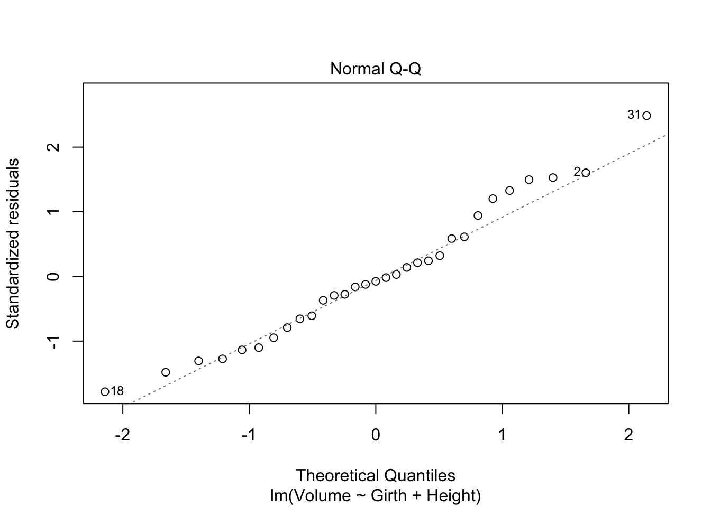
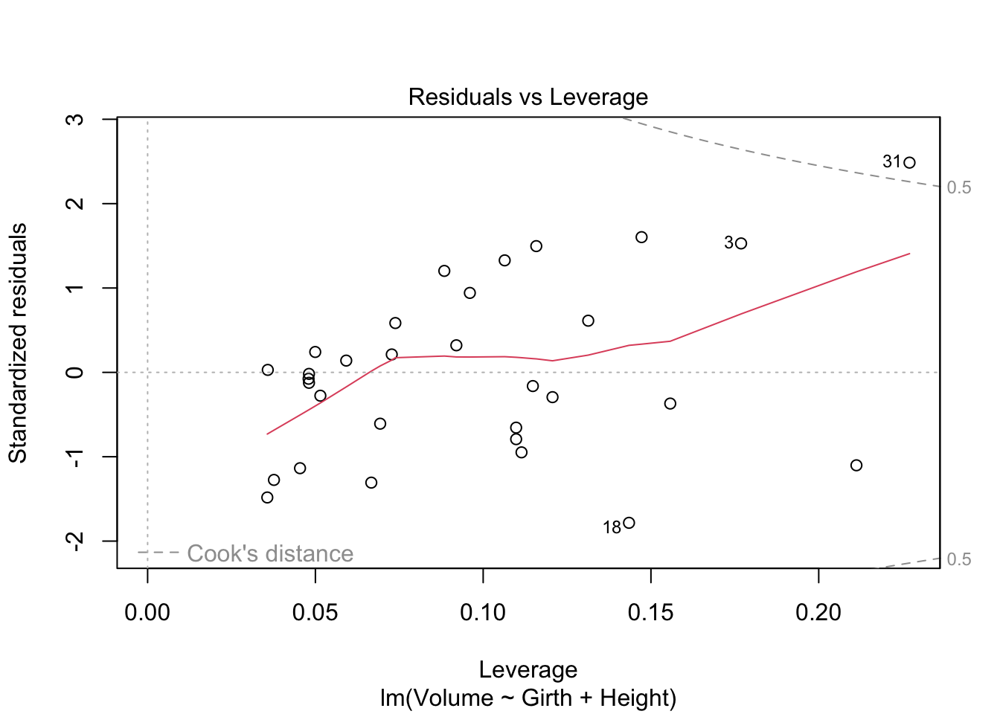
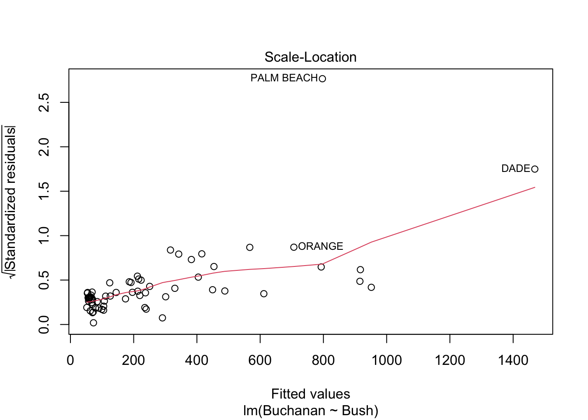

Code
library(tidyverse)
library(ggplot2)
library(dplyr)
library(readxl)
library(alr4)
library(smss)
knitr::opts_chunk$set(echo = TRUE)library(tidyverse)
library(ggplot2)
library(dplyr)
library(readxl)
library(alr4)
library(smss)
knitr::opts_chunk$set(echo = TRUE)Exploring variables and fitting models for d):
data("house.selling.price.2")
head(house.selling.price.2) P S Be Ba New
1 48.5 1.10 3 1 0
2 55.0 1.01 3 2 0
3 68.0 1.45 3 2 0
4 137.0 2.40 3 3 0
5 309.4 3.30 4 3 1
6 17.5 0.40 1 1 0m1 <- (lm(P ~ New, data=house.selling.price.2))
m2 <- (lm(P ~ New + Ba, data=house.selling.price.2))
m3 <- (lm(P ~ New + Ba + Be, data=house.selling.price.2))
m4 <- (lm(P ~ New + Ba + Be + S, data=house.selling.price.2))summary(m1)
Call:
lm(formula = P ~ New, data = house.selling.price.2)
Residuals:
Min 1Q Median 3Q Max
-71.749 -21.249 -7.449 17.251 190.751
Coefficients:
Estimate Std. Error t value Pr(>|t|)
(Intercept) 89.249 5.148 17.336 < 2e-16 ***
New 34.158 9.383 3.641 0.000451 ***
---
Signif. codes: 0 '***' 0.001 '**' 0.01 '*' 0.05 '.' 0.1 ' ' 1
Residual standard error: 41.51 on 91 degrees of freedom
Multiple R-squared: 0.1271, Adjusted R-squared: 0.1175
F-statistic: 13.25 on 1 and 91 DF, p-value: 0.0004515summary(m2)
Call:
lm(formula = P ~ New + Ba, data = house.selling.price.2)
Residuals:
Min 1Q Median 3Q Max
-45.947 -22.301 -7.501 14.153 119.618
Coefficients:
Estimate Std. Error t value Pr(>|t|)
(Intercept) -47.113 14.869 -3.169 0.00209 **
New 22.454 6.793 3.305 0.00136 **
Ba 71.480 7.553 9.463 3.74e-15 ***
---
Signif. codes: 0 '***' 0.001 '**' 0.01 '*' 0.05 '.' 0.1 ' ' 1
Residual standard error: 29.55 on 90 degrees of freedom
Multiple R-squared: 0.5625, Adjusted R-squared: 0.5528
F-statistic: 57.85 on 2 and 90 DF, p-value: < 2.2e-16summary(m3)
Call:
lm(formula = P ~ New + Ba + Be, data = house.selling.price.2)
Residuals:
Min 1Q Median 3Q Max
-46.066 -17.066 -4.607 9.384 115.151
Coefficients:
Estimate Std. Error t value Pr(>|t|)
(Intercept) -106.101 16.892 -6.281 1.21e-08 ***
New 15.099 6.070 2.487 0.0147 *
Ba 60.184 6.900 8.722 1.41e-13 ***
Be 26.175 4.811 5.440 4.63e-07 ***
---
Signif. codes: 0 '***' 0.001 '**' 0.01 '*' 0.05 '.' 0.1 ' ' 1
Residual standard error: 25.74 on 89 degrees of freedom
Multiple R-squared: 0.6717, Adjusted R-squared: 0.6606
F-statistic: 60.69 on 3 and 89 DF, p-value: < 2.2e-16summary(m4)
Call:
lm(formula = P ~ New + Ba + Be + S, data = house.selling.price.2)
Residuals:
Min 1Q Median 3Q Max
-36.212 -9.546 1.277 9.406 71.953
Coefficients:
Estimate Std. Error t value Pr(>|t|)
(Intercept) -41.795 12.104 -3.453 0.000855 ***
New 18.984 3.873 4.902 4.3e-06 ***
Ba 19.203 5.650 3.399 0.001019 **
Be -2.766 3.960 -0.698 0.486763
S 64.761 5.630 11.504 < 2e-16 ***
---
Signif. codes: 0 '***' 0.001 '**' 0.01 '*' 0.05 '.' 0.1 ' ' 1
Residual standard error: 16.36 on 88 degrees of freedom
Multiple R-squared: 0.8689, Adjusted R-squared: 0.8629
F-statistic: 145.8 on 4 and 88 DF, p-value: < 2.2e-16I generated a model with an additional variable added each time and then ran the above five stats on all and got that the model with all four variables included would be the best fit every time so that is the one I would go with here.
PRESS <- function(linear.model)
{pr <- residuals(linear.model)/(1-lm.influence(linear.model)$hat)
PRESS <- sum(pr^2)
return(PRESS)}
pressm1 <- PRESS(m1)
pressm2 <- PRESS(m2)
pressm3 <- PRESS(m3)
pressm4 <- PRESS(m4)
print(pressm1)[1] 164039.3print(pressm2)[1] 87677.82print(pressm3)[1] 67942.88print(pressm4)[1] 28390.22AIC(m1)[1] 960.908AIC(m2)[1] 898.677AIC(m3)[1] 873.9787AIC(m4)[1] 790.6225BIC(m1)[1] 968.5058BIC(m2)[1] 908.8074BIC(m3)[1] 886.6417BIC(m4)[1] 805.8181Below I have fit a model for Volume with the two predictor variables of Height and Girth, then run diagnostics on it. All looks normal with the exception of the first graph, Residual vs Fitted. Instead of being a relatively straight line with a random distribution around the line, the line is instead curved, so this would be the regression assumption that was violated.
head(trees) Girth Height Volume
1 8.3 70 10.3
2 8.6 65 10.3
3 8.8 63 10.2
4 10.5 72 16.4
5 10.7 81 18.8
6 10.8 83 19.7tree1 <- (lm(Volume ~ Girth + Height, data=trees))
summary(tree1)
Call:
lm(formula = Volume ~ Girth + Height, data = trees)
Residuals:
Min 1Q Median 3Q Max
-6.4065 -2.6493 -0.2876 2.2003 8.4847
Coefficients:
Estimate Std. Error t value Pr(>|t|)
(Intercept) -57.9877 8.6382 -6.713 2.75e-07 ***
Girth 4.7082 0.2643 17.816 < 2e-16 ***
Height 0.3393 0.1302 2.607 0.0145 *
---
Signif. codes: 0 '***' 0.001 '**' 0.01 '*' 0.05 '.' 0.1 ' ' 1
Residual standard error: 3.882 on 28 degrees of freedom
Multiple R-squared: 0.948, Adjusted R-squared: 0.9442
F-statistic: 255 on 2 and 28 DF, p-value: < 2.2e-16plot(tree1)



I ran the regression and diagnostic below and Palm Beach is definitely an outlier. In every plot including residuals, normal distribution, and scale, Palm Beach is a clear outlier compared to the other counties.
As shown in my second model and diagnostics, taking the log definitely helps but it still doesn’t bring Palm Beach in line with the other counties enough to make it no longer look like an outlier which indicates that this county actually was an outlier in this dataset.
head(florida) Gore Bush Buchanan
ALACHUA 47300 34062 262
BAKER 2392 5610 73
BAY 18850 38637 248
BRADFORD 3072 5413 65
BREVARD 97318 115185 570
BROWARD 386518 177279 789florida1 <- (lm(Buchanan ~ Bush, data=florida))
summary(florida1)
Call:
lm(formula = Buchanan ~ Bush, data = florida)
Residuals:
Min 1Q Median 3Q Max
-907.50 -46.10 -29.19 12.26 2610.19
Coefficients:
Estimate Std. Error t value Pr(>|t|)
(Intercept) 4.529e+01 5.448e+01 0.831 0.409
Bush 4.917e-03 7.644e-04 6.432 1.73e-08 ***
---
Signif. codes: 0 '***' 0.001 '**' 0.01 '*' 0.05 '.' 0.1 ' ' 1
Residual standard error: 353.9 on 65 degrees of freedom
Multiple R-squared: 0.3889, Adjusted R-squared: 0.3795
F-statistic: 41.37 on 1 and 65 DF, p-value: 1.727e-08plot(florida1)



florida2 <- (lm(log(Buchanan) ~ log(Bush), data=florida))
summary(florida2)
Call:
lm(formula = log(Buchanan) ~ log(Bush), data = florida)
Residuals:
Min 1Q Median 3Q Max
-0.96075 -0.25949 0.01282 0.23826 1.66564
Coefficients:
Estimate Std. Error t value Pr(>|t|)
(Intercept) -2.57712 0.38919 -6.622 8.04e-09 ***
log(Bush) 0.75772 0.03936 19.251 < 2e-16 ***
---
Signif. codes: 0 '***' 0.001 '**' 0.01 '*' 0.05 '.' 0.1 ' ' 1
Residual standard error: 0.4673 on 65 degrees of freedom
Multiple R-squared: 0.8508, Adjusted R-squared: 0.8485
F-statistic: 370.6 on 1 and 65 DF, p-value: < 2.2e-16plot(florida2)